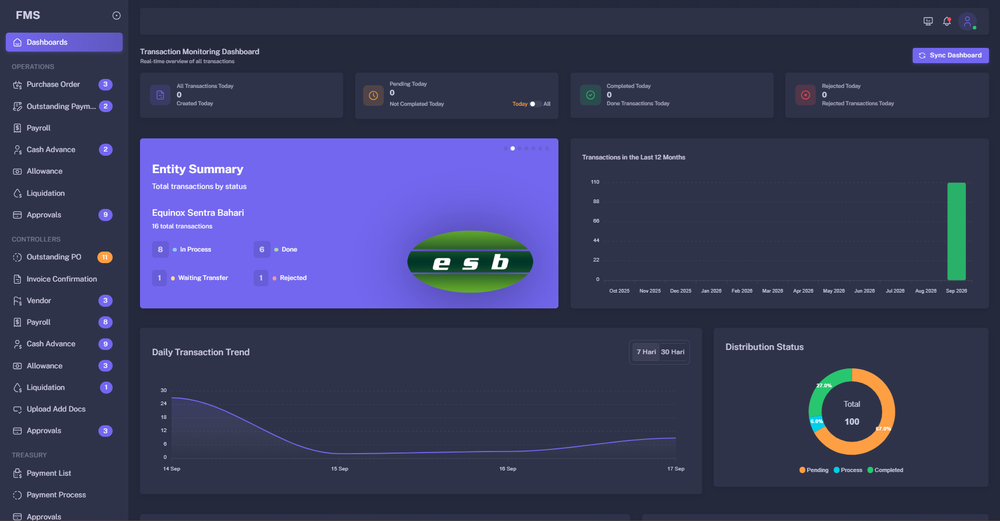
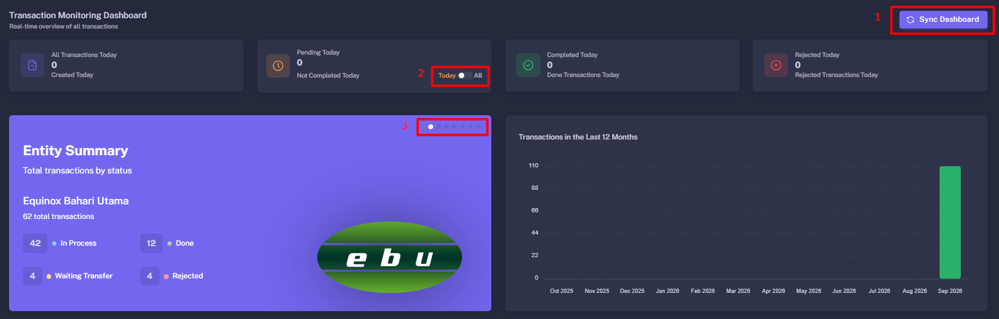
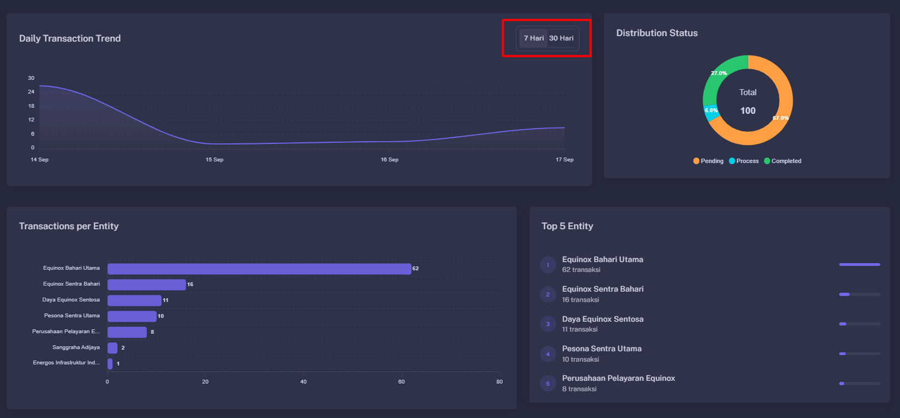
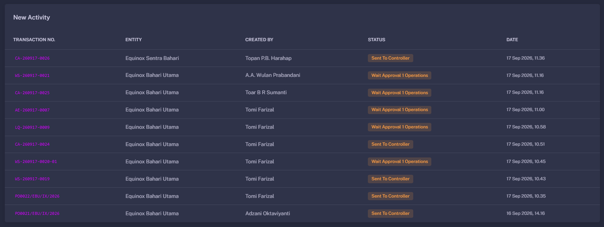

Dashboard User Guide
The Dashboard is the main landing page of the Finance Management System. It provides a high-level view of transaction activity, pending work, approval tasks, payment progress, notifications, and finance trends.
Dashboard Overview
The Dashboard is displayed after login and provides information relevant to the current user’s role, permissions, entity scope, and assigned workflow responsibilities.
What you may see on the Dashboard
- Transaction summary cards and financial totals.
- Pending approval, review, or payment task counters.
- Transaction status summaries.
- Charts for expense, payment, or transaction trends.
- Recent transaction activity and system notifications.
- Shortcuts to relevant Operational, Controller, Treasury, or History pages.
How to use the Dashboard
- Log in to the Finance Management System.
- Review the summary cards at the top of the Dashboard.
- Check pending tasks that require your action.
- Use filters to adjust the displayed period or scope when available.
- Click cards, chart items, or task rows to open the related transaction list or detail page.

Dashboard widgets can be different for each user. For example, an Operational user may see submission-related tasks, while a Treasury user may see payment processing and release tasks.
Summary Cards
Summary cards provide quick counts or totals for selected finance activities, transaction statuses, and payment-related information.
Common summary card examples
How to use a summary card
- Review the title, count, amount, and displayed period on the card.
- Click the card if it is interactive.
- The system may open a filtered transaction list related to that card.
- Use the transaction list to review individual records and their current status.

Always review the selected date range and filter context before using a dashboard total for reporting or decision-making. A card may reflect only the current period, entity, department, or assigned user scope.
Charts and Trends
Dashboard charts visualize transaction patterns and help users monitor expense, payment, approval, or operational trends over time.
Typical chart information
- Transaction value by day, week, month, or year.
- Payment amounts by period or payment status.
- Expense distribution by department, entity, vessel, vendor, or category.
- Number of pending, approved, returned, or released transactions.
- Comparison between planned, requested, approved, and paid values if supported.
How to review a chart
- Apply the desired Dashboard filters first.
- Review the chart title to understand what data is being displayed.
- Hover over a chart element if the interface provides tooltips.
- Compare periods, categories, or status values shown in the chart legend.
- Click a chart segment or use a related action to drill down into underlying records when supported.

Charts are intended for monitoring and trend analysis. For exact transaction-level validation, open the linked transaction list or use Transaction History.
Recent Activity
The Recent Activity widget displays the latest transaction-related events, allowing users to quickly monitor newly created or updated records.
Information displayed
- The name or type of a newly created or updated transaction.
- The latest transaction or activity status.
- The time when the activity occurred.
- The user or responsible party associated with the activity, when available.
How to use Recent Activity
- Scroll to the Recent Activity section on the Dashboard.
- Review the latest entries to identify newly created or updated transactions.
- Check the displayed status and time to determine which transactions may require follow-up.
- Click an activity item, when available, to open its related transaction details.
- Open Transaction History when you need a complete activity record or additional transaction details.

Recent Activity is intended for quick monitoring. Open the related transaction or Transaction History to review full details, documents, and the complete activity trail.
Transaction Status Reference
Dashboard widgets may summarize transactions by status. The available status names can differ depending on the transaction type and configured workflow.
| Status | Description | Typical Next Step |
|---|---|---|
| Pending | The transaction is waiting for review, approval, payment processing, or another workflow action. | The assigned user opens the transaction and completes the required action. |
| On Review | The transaction is currently being checked by Operational, Controller, or Treasury. | The responsible reviewer validates data and documents, then forwards or returns the transaction. |
| Returned / Rejected | The transaction requires correction or has been rejected based on workflow rules. | The requester reviews the note, corrects the issue, and resubmits when permitted. |
| Approved | The required approval has been completed and the transaction can move to the next workflow stage. | The transaction proceeds to Controller review, Treasury processing, or the configured next stage. |
Dashboard Troubleshooting
Use the following checks when Dashboard data does not appear as expected.
| Issue | Possible Cause | Recommended Action |
|---|---|---|
| No data is shown | The active date range or filters do not include any records. | Check the selected period, entity, department, vessel, and other filters. |
| Expected card is missing | The card is not available for the current role or permission. | Confirm your assigned role and contact the system administrator if access is required. |
| Task count differs from expectation | The list may be filtered by user scope, role, workflow stage, or transaction status. | Open the task list and review applied filters and transaction statuses. |
| Chart does not update | The page may need refresh, filters may not have been applied, or data may still be processing. | Refresh the page, reapply filters, and confirm the date range and permissions. |
When reporting a Dashboard issue, include a screenshot, your current filters, the affected card or chart title, the time of the issue, and the expected result. This helps the administrator investigate faster.